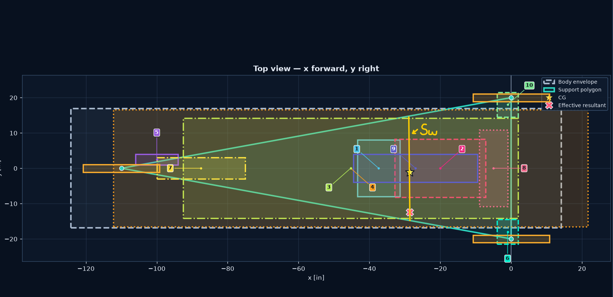
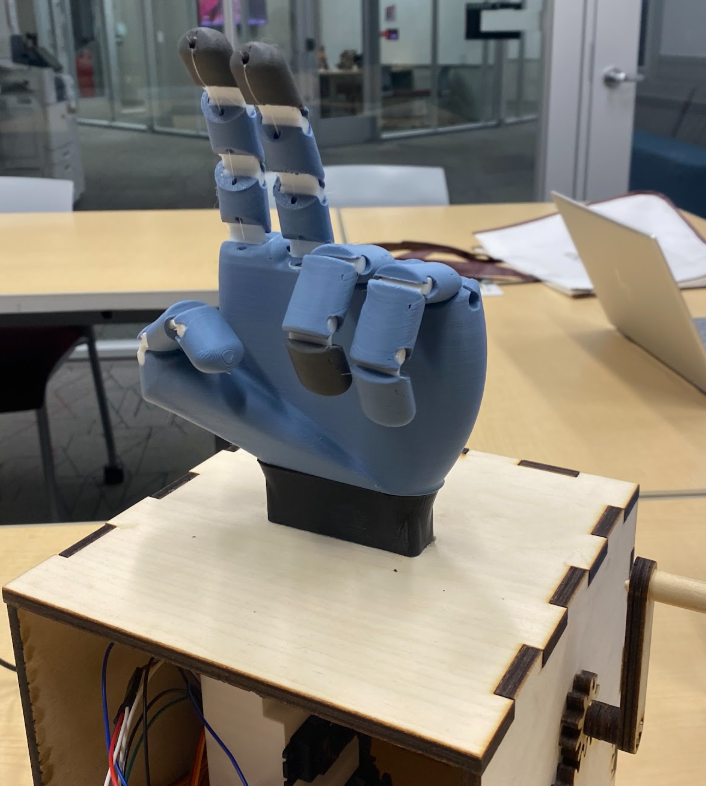
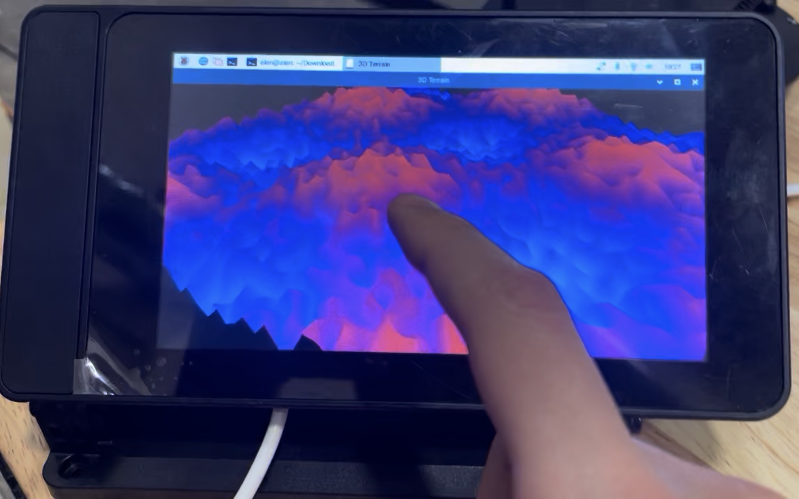
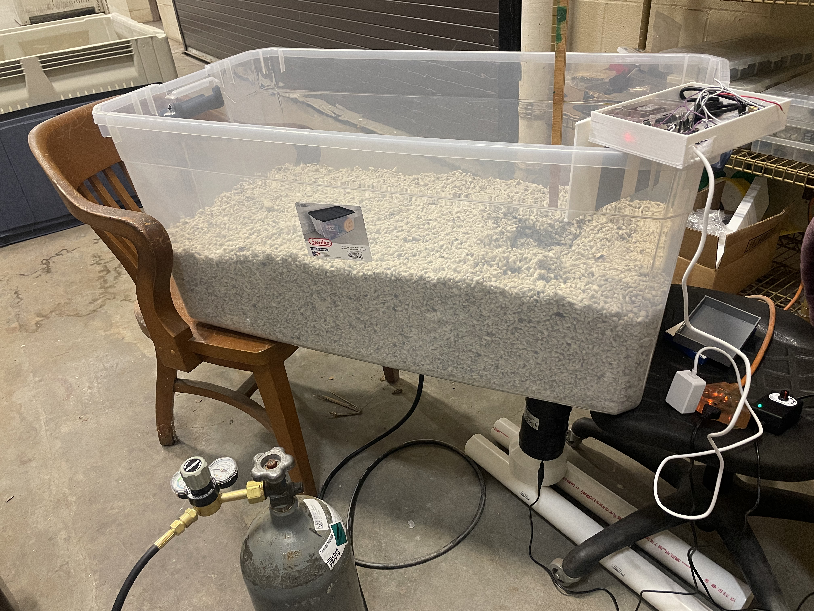

I am on the Suspesion Subteam for Solar Car for the '26 - '27 year.
I am currently working on hand calculations and setting up modeling for the car's suspension. We are currently
looking at the necessary track width and will be using Siemens NX to model parts. The goal is to
have our systems manufactured and assembled by the end of next semester (Spring 2027)
In addition to this, I am on the Solar Car "Battery Box" Capstone team,
where my team and I are looking at how to make the most efficient case for our battery cells and
considering reactive battery cooling mechanisms!

My team and I were tasked with building a "toy for the elderly" for my geometric modeling course project. We agreed on making a hand that could play "rock, paper, scissors" with the elderly. I offered to integrate some electronics as opposed to making it entirely mechanical, so I took the lead in such effort. I incorporated servo motors, a DC step-down converter, buttons, and an Arduino. Everything was modeled in SolidWorks. The finger joints were made with TPU to allow them to "spring" back to their original shape. The apparatus worked by someone turning a revolving handle that would trigger the hand to make one of three gestures. Ultimately, we won the award for best prototype and it was a great experience in developing and finishing something electromechanical.

I led a research project with the USDA making a rover that could go over piles of cottonseed and detect/map CO2 concentrations at specific areas. Pictured on the left is the terrain I had the Raspberry Pi generate (OpenGL) from accelerometer data sent to it from an ESP32 onboard the rover. At first, I ran multiple experiments with varying volumes of cottonseed, fan speeds, and small bursts of CO2 to determine optimal sensor positioning. Pictured below is one of the setups I used for such experiments.
